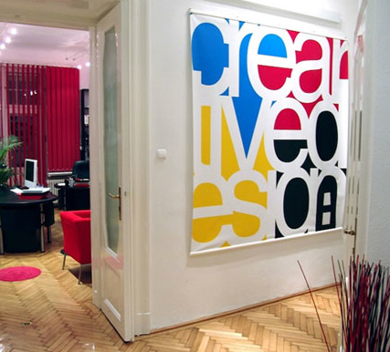

Wed, 12 Jan 2011 07:53:00 · design · graphic · interior · space
Cool Showcase of Inspiring Graphic Designer Offices

For extra inspiration, see full gallery here.
Wed, 12 Jan 2011 07:53:00 · design · graphic · interior · space

For extra inspiration, see full gallery here.